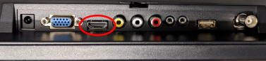

operanthouseのヘッダー
Kitaya lab
電子回路の組み付け（本体）
※複数の装置から写真を撮っているので写真間で配線の色が異なる事があるので注意して下さい。
オペラントハウス本体を組み立てます。
以下のネジとナットを用意して下さい。

ラズベリーパイの準備
ラズベリーパイ4はRaspberry Pi OS (Linuxの派生版)で動く小型のPCの様なものでパソコンのように様々な事ができます。
ただ通常のPCとは異なり、内部にデータの保存装置を持たないため、OSを含めて全てのデータはSDカードに保存します。
まずラズベリーパイOSをインストールしたSDカードを作ります。400GBのSDカードだと動画を多く保存できて便利です(320x240 pixelの動画で80MB/hくらい)。

SDカードリーダーに差してWindowsPCへ接続します。

WindowsPCでラズベリーパイの公式サイト(https://www.raspberrypi.org/software/)からラズベリーパイOSの書き込みソフトをダウンロードします。

書き込みソフトを実行します。

Raspberry Pi OS(32bit)を選択します。

次に書き込み先としてSDカードを選択します。
※SDカードに入っているデータは全て消えますので注意して下さい。またくれぐれも他のデバイスを選択しないでください。

WRITEボタンを押すと書き込みが開始されます。

書き込んでいる間に付属のマニュアルに従ってラズベリーパイのケースを組み立てます。
ここではMiuzeiケースセットを使った例を解説します。
組み立てるとこの様になります。

書き込みが完了したSDカードをラズベリーパイのSDカードスロットに差し込みます。
※裏表に注意

ラズベリーパイを本体パーツに取り付けます。
M3x50(直径3mm, 長さ50mm)のネジと3mmナットを準備します。

4箇所のネジ穴を使ってラズベリーパイを固定します。もし穴が小さすぎる場合や位置が異なる場合、3mmのドリルで穴を空けてください。
※ネジ穴の開け方のコツ


ネジを裏側からナットで固定します。

Arduinoの取り付け

M2x20のネジと2mmのナットを用意します。

取り付けます。


スイッチ基盤の取り付け
ハンダが直接本体に接触しないよう、赤丸で示したようにナットをスペーサーにします。

取り付けます。


スイッチ基盤のジャンパーワイヤーをArduinoに接続します。
GND - スイッチ基盤のマイナス電源
Ch13 - 天井照明LED
Ch12 - 赤外線LED
CH11 - 同期信号(必要な場合のみ)
Ch10 - 報酬手掛りLED
Ch3 - サーボ

スイッチ基盤の電源ケーブルをラズパイのGND(下段右から7番目のピン)および5V出力(右下のピン)に繋ぎます。


モニターの取り付け
3mmナットを本体の窪みに嵌めます。
嵌めづらい場合はペンチを使ってください。


M3x50ネジをナットに通し、モニタ抑えを取り付けます。


モニタを垂直に置き、ネジを回してモニタが垂直になるようフィットさせます。

モニタとラズベリーパイをHDMIケーブル（HDMI-Mini to HDMI）で接続します。

このモニタではコネクタは下側にあります。

ラズベリーパイ側はここ。

これで電子機器の本体への組み付けは完了です。